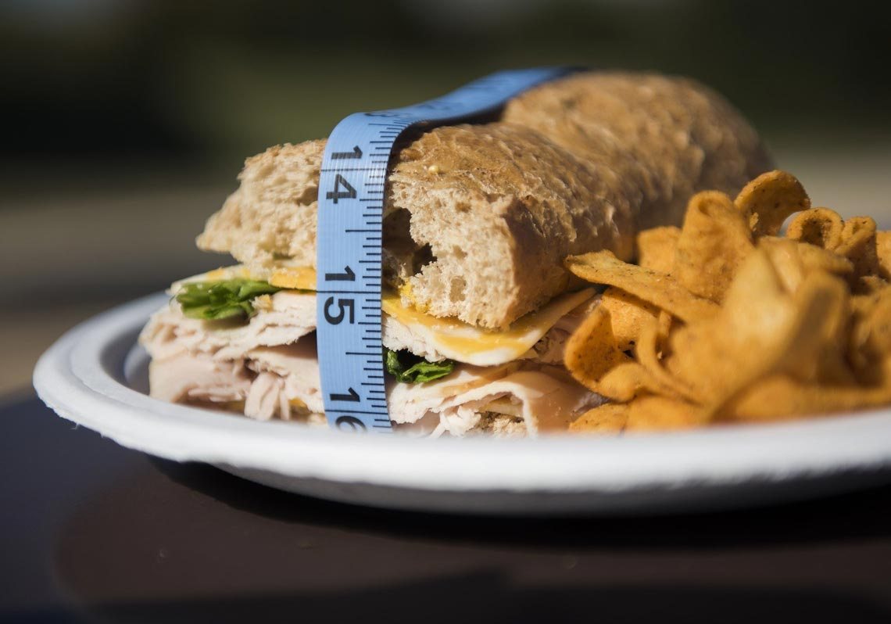

什麼是肥胖
肥胖是指一定程度的明顯超重與脂肪層過厚，是體內脂肪，尤其是甘油三酯積聚過多而導致的一種狀態。
由於食物攝入過多或機體代謝的改變而導致體內脂肪積聚過多造成體重過度增長並引起人體病理、生理改變或潛伏。
營養學角度
從營養學角看肥胖是營養過剩的表現，是由於能量的供給大於能量的消耗，作為機體燃料的脂肪在體內過剩而貯存起來的一種狀態，就是我們平時身體吸收的大於身體所消耗的能量，就轉化為脂肪儲存起來了。
就是為什麼動物在秋天的時候比較肥，呵呵！特別是需要冬眠的動物，他們都需要子啊秋天把自己吃胖，然後到了冬天才能有足夠的脂肪供其消耗。
醫學角度
從醫學角度看肥胖是指脂肪細胞數量增加和脂肪細胞中脂肪儲存過剩，身體脂肪過度增多，體重超過正常值20%以上，並對健康造成了嚴重的危害的一種超體重狀態 ，這樣解釋呢就比較專業化，可以看出的就是體重只要超過正常值的20%就會對我們的健康構成威脅。
肥胖的現狀
肥胖的現狀
當今社會，肥胖已經成為一個世界性難題，目前，全球有三分之一的人超重或肥胖。而且據美國華盛頓大學健康指標與評估研究所針對全球188個國家肥胖人口的調查結果，數據顯示，過去30多年來，沒有一個國家成功降低人口肥胖率。
台灣近幾年的數據來看，台灣18歲以上成年人，接近5成處於過重。台灣肥胖醫學會理事長楊宜青指出，台灣的肥胖盛行率突破20%，全台至少有350萬人有肥胖症困擾，平均每5人就有1人超重。值得注意的是，以年齡區段來看，35-44歲的男性肥胖率超過60%，相當於每10人就有6人過重；醫師提醒，肥胖的併發症除「三高」外，還會有不孕且增加攝護腺癌及其他癌症等風險，輕忽不得。
肥胖特點

（一）暴食型肥胖
俗稱「大胃王」，如能強制節食，可暫時瘦下來，但一旦控制不住食慾時，又會反彈回來，而且很可能比以前更加胖。
（二）壓力型肥胖
壓力過大肝功能下降，還會影響到胃，使胃發熱，食慾異常旺盛。
這種類型的人，心情一煩躁就會出現食慾旺盛、頭痛、眼睛充血等症狀。有些女生壓力大、心情煩的時候，就猛吃甜食，可以說是這類人的典型吧。
（三）遺傳型肥胖
有遺傳基因，父母胖或兄弟姐妹都胖，從出生至今體重都超標人群。
（四）病理型肥胖
包括水腫導致的肥胖，這是身體的排水功能差，多餘水分在體內積聚所造成的；貧血型則是因體內血液不足，身體基本機能下降，代謝功能發生異常，最終導致肥胖；同樣內分泌異常會伴也會有繼發性肥胖症，影響脂肪的代謝，脫脂轉化酶（LPA）是人體分解、轉化、減少脂肪的成分，可以加快脂肪的分解速度；再有高血壓和血糖高的人群都是因為體內糖份過高引起肥胖。
快來測一測自己的的BMI/BMR/TDEE吧～
不知道看到這裏，有沒有對肥胖有更深的了解呢。所以，不管怎麼類型的肥胖，常規的減肥方法基本沒有捷徑可走。歸結起來就是兩條：少吃、多動。調整飲食結構，保持良好心情，堅持鍛鍊，減肥一定不是難題的。